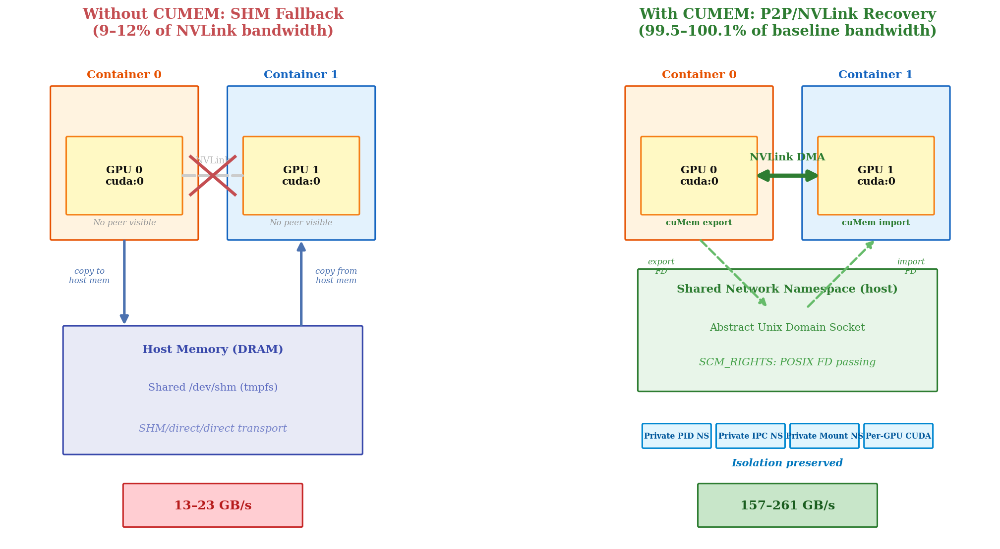
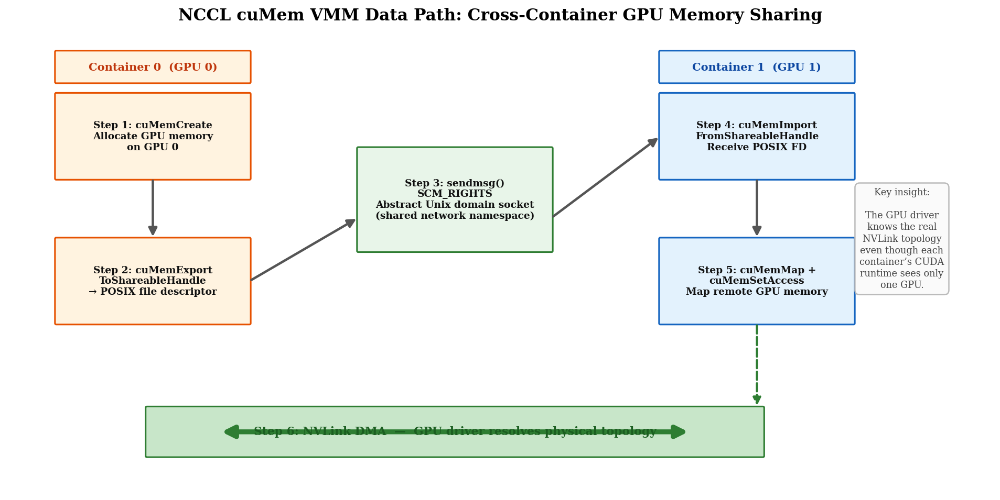
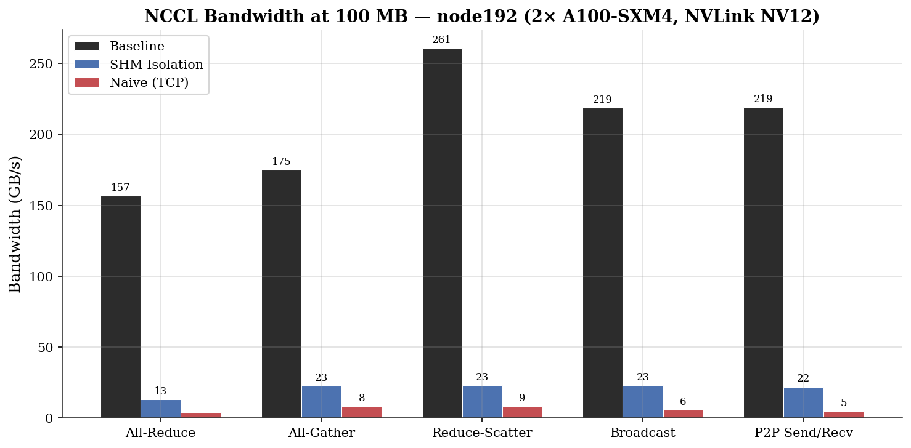
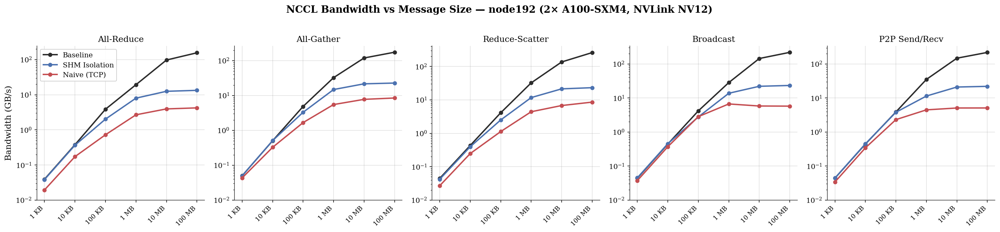
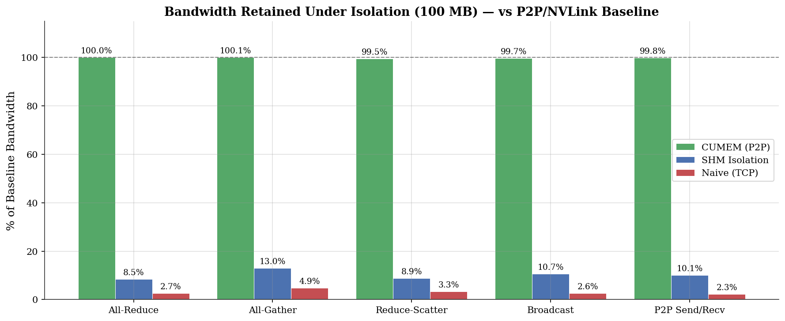
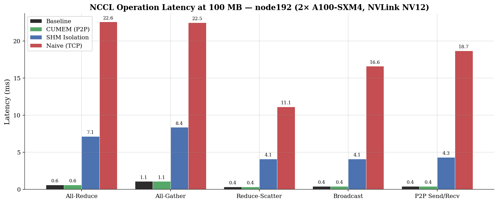
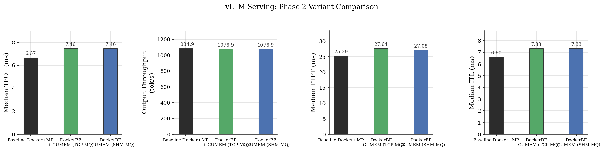

Experiment 2: Recovering NVLink Performance
Under Per-GPU Container Isolation
node192 · 2× A100-SXM4-40GB · NVLink NV12
Generated 2026-03-31 15:09 UTC · commit 98cc1ac49
1. Objective
Achieve bare-metal NCCL NVLink bandwidth while maintaining per-GPU Docker container isolation (one physical GPU per container, private PID/IPC/mount namespaces). The goal is to enable vLLM’s DockerDistributedExecutor to run GPU workers in isolated containers without sacrificing the NVLink interconnect performance that tensor-parallel inference depends on.
Result: NCCL’s cuMem VMM API (NCCL_CUMEM_ENABLE=1)
with host networking recovers 99.5–100.1% of the uncontainerized
NVLink P2P baseline across all collective operations. No NCCL source code
changes required.
2. The Problem: Container Isolation Breaks NVLink P2P
When GPU workers run in separate containers with per-GPU
CUDA_VISIBLE_DEVICES, each container sees only one GPU as
cuda:0. NCCL’s standard P2P transport relies on
cudaDeviceCanAccessPeer() to verify GPU-to-GPU access, but
this call fails because there is no visible peer device. Without P2P,
NCCL falls back to slower transports:
| Fallback Transport | Data Path | 100 MB Bandwidth | vs NVLink P2P |
|---|---|---|---|
| SHM/direct/direct | GPU → Host DRAM → GPU | 13–23 GB/s | 9–12% |
| NET/Socket (TCP) | GPU → CPU → TCP → CPU → GPU | 4–9 GB/s | 2–5% |
This represents a 7–12× bandwidth degradation on NVLink hardware — making per-GPU container isolation impractical for tensor-parallel workloads without a recovery mechanism.

Figure 1: Per-GPU container isolation forces data through host DRAM (left). The cuMem VMM API recovers NVLink DMA by exporting GPU memory as POSIX FDs passed via Unix domain sockets (right).
3. The Solution: NCCL cuMem VMM API
NCCL 2.x includes an alternative GPU memory sharing path based on the
CUDA Virtual Memory Management (VMM) API, activated by setting
NCCL_CUMEM_ENABLE=1. Unlike traditional CUDA IPC (which
requires both GPUs visible in one CUDA context), the cuMem path exports
GPU memory as POSIX file descriptors that can be passed between
processes via Unix domain sockets. The NVIDIA driver resolves the physical
NVLink topology for DMA, regardless of CUDA runtime GPU visibility.
3.1 How P2P Transport Selection Succeeds
Despite each container seeing only one GPU, NCCL’s
p2pCanConnect() in p2p.cc does not reject the
P2P transport. Tracing the decision path:
ncclTopoCheckP2p()(paths.cc) — checks two conditions: (a)hostHashmatches (same hostname via host networking), and (b)shmDevmatches (same/dev/shmdevice number via shared volume). Both pass → P2P is not rejected at the topology level.busIdToCudaDev()(p2p.cc:156) — tries to convert the peer GPU’s PCI bus ID to a CUDA device index. Returns-1because the peer GPU is not visible. However, on CUDA ≥10.1 (we have 12.4), the code simply returns without disabling P2P (lines 159–161). This is the critical code path.cudaDeviceCanAccessPeer()(p2p.cc:170) — never reached because step 2 returned early whenbusIdToCudaDevfailed.- P2P transport is selected. At setup time,
ncclCuMemEnable()detects that the cuMem VMM API is available and selects theP2P_CUMEMsubtype, which uses POSIX FD-based memory sharing instead of CUDA IPC handles.
3.2 The cuMem Data Path
Once P2P/CUMEM transport is selected, NCCL establishes GPU memory sharing through a six-step process:

Figure 2: The cuMem VMM data path. GPU memory is exported as a POSIX file descriptor, passed to the peer container via Unix domain socket SCM_RIGHTS, then imported and mapped. The GPU driver handles NVLink DMA.
cuMemCreate()— allocates GPU memory using the VMM API on the local GPU (e.g., GPU 0 in Container 0).cuMemExportToShareableHandle()withCU_MEM_HANDLE_TYPE_POSIX_FILE_DESCRIPTOR— exports the GPU memory allocation as a POSIX file descriptor. This FD represents the physical GPU memory, not a CUDA runtime handle.sendmsg()withSCM_RIGHTS— NCCL’s proxy thread sends the FD to the peer container’s proxy thread over an abstract Unix domain socket (SOCK_DGRAM). TheSCM_RIGHTSancillary message passes the file descriptor across process boundaries.cuMemImportFromShareableHandle()— the peer container receives the FD and imports it as a cuMem allocation handle.cuMemMap()+cuMemSetAccess()— maps the imported GPU memory into the local virtual address space and grants the local GPU access permissions.- NVLink DMA — the NVIDIA driver knows the real physical topology. When the local GPU accesses the mapped memory, the driver routes the DMA transfer over the NVLink interconnect, achieving full hardware bandwidth.
3.3 Why Shared Network Namespace Is Required
NCCL’s IPC socket implementation (ipcsocket.cc) uses
abstract Unix domain sockets by default
(NCCL_PARAM(IpcUseAbstractSocket, "IPC_USE_ABSTRACT_SOCKET", 1)).
Abstract sockets are created by setting sun_path[0] = '\0' in the
sockaddr_un structure. In Linux, abstract sockets are bound to the
network namespace, not the filesystem — meaning an abstract socket
created in one network namespace is invisible to processes in another.
With Docker bridge networking, each container has a separate network
namespace. When Container 1’s NCCL proxy tries to sendmsg()
to Container 0’s abstract socket, it gets ECONNREFUSED (errno 111)
because the socket literally does not exist in its namespace.
The solution is network_mode: host, which places both containers
in the host’s network namespace. Abstract UDS sockets are then
visible across containers. This does not share IPC, PID, or mount namespaces
— those remain private.
3.4 Required Docker Configuration
services:
rank0:
image: gpu-comm-benchmark:latest
runtime: nvidia
network_mode: host # Shared network NS for abstract UDS
environment:
- NVIDIA_VISIBLE_DEVICES=all # NVML topology discovery
- CUDA_VISIBLE_DEVICES=0 # Per-GPU compute isolation
- NCCL_CUMEM_ENABLE=1 # Enable cuMem VMM API
volumes:
- shared-shm:/dev/shm # shmDev match for same-node detection
deploy:
resources:
reservations:
devices:
- driver: nvidia
device_ids: ['0', '1'] # Both GPUs to NVML
capabilities: [gpu]
3.5 Isolation Properties
| Namespace / Resource | Baseline (No Isolation) |
CUMEM Isolation (This Solution) |
SHM Isolation (Fallback) |
|---|---|---|---|
| PID namespace | Host (shared) | Private | Private |
| IPC namespace | Host (shared) | Private | Private |
| Mount namespace | Host (shared) | Private | Private |
| Network namespace | Host | Host | Bridge (private) |
| GPU (CUDA runtime) | All visible | 1 per container | 1 per container |
| Process visibility | All processes visible | Container-only | Container-only |
| NCCL bandwidth | 157–261 GB/s | 157–260 GB/s | 13–23 GB/s |
The CUMEM isolation configuration provides stronger isolation than the baseline (private PID, IPC, mount namespaces; per-GPU CUDA visibility) while matching baseline NVLink bandwidth. The network namespace is shared, but this is the same as the baseline configuration.
4. Experimental Setup
| Machine | node192 (10.0.2.192) |
| GPUs | 2× NVIDIA A100-SXM4-40GB (GPU 0, GPU 1) |
| GPU Interconnect | NV12 (12× NVLink, ~600 GB/s bidirectional theoretical) |
| NCCL | 2.21.5 (bundled with PyTorch 2.5.1+cu124) |
| CUDA | 12.4 (driver 12.6) |
| Docker | 27.3.1 with nvidia runtime |
| Benchmark | Custom PyTorch NCCL benchmark: all-reduce, all-gather, reduce-scatter, broadcast, P2P send/recv |
| Message sizes | 1 KB – 100 MB (6 sizes, log-spaced) |
| Timing | CUDA events, 100 iterations, trimmed mean (drop top/bottom 5%) |
5. Configurations Under Test
Four Docker Compose configurations test the isolation spectrum on node192:
| Configuration | GPU Visibility | IPC | Network | Shared Volumes | NCCL Transport | NCCL Env |
|---|---|---|---|---|---|---|
| Baseline (P2P/NVLink) | All GPUs per container | Host | Host | None | P2P/CUMEM/read | Default |
| CUMEM Isolation (P2P Recovery) | 1 GPU per container (CUDA), all (NVML) | Private | Host | /dev/shm (4 GB) | P2P/CUMEM/read | NCCL_CUMEM_ENABLE=1 |
| SHM Isolation | 1 GPU per container (CUDA), all (NVML) | Private | Bridge | /dev/shm (4 GB), /tmp (200 MB) | SHM/direct/direct | NCCL_P2P_DISABLE=1, NCCL_HOSTID, NCCL_NET_DISABLE_INTRA=1 |
| Naive Isolation (TCP) | 1 GPU per container (CUDA), all (NVML) | Private | Bridge | /tmp (200 MB) | NET/Socket | NCCL_HOSTID only |
6. Results
6.1 Bandwidth at 100 MB
| Operation | Baseline | CUMEM | SHM | TCP | CUMEM/Base | SHM/Base | TCP/Base |
|---|---|---|---|---|---|---|---|
| All-Reduce | 156.64 | 156.69 | 13.34 | 4.23 | 100.0% | 8.5% | 2.7% |
| All-Gather | 174.85 | 174.96 | 22.80 | 8.50 | 100.1% | 13.0% | 4.9% |
| Reduce-Scatter | 260.78 | 259.57 | 23.21 | 8.58 | 99.5% | 8.9% | 3.3% |
| Broadcast | 218.65 | 217.92 | 23.29 | 5.75 | 99.7% | 10.7% | 2.6% |
| P2P Send/Recv | 219.28 | 218.85 | 22.06 | 5.11 | 99.8% | 10.1% | 2.3% |
All bandwidth values in GB/s. Percentages show fraction of baseline retained.

Figure 3: NCCL bandwidth at 100 MB message size. CUMEM isolation (green) matches the baseline, while SHM and TCP fall far behind.
6.2 Bandwidth vs Message Size

Figure 4: Bandwidth scaling across message sizes. Baseline and CUMEM lines overlap at all sizes, confirming full NVLink recovery.
6.3 Bandwidth Recovery Relative to Baseline

Figure 5: Percentage of baseline bandwidth retained. CUMEM achieves 99.5–100.1% across all operations.
6.4 Latency at 100 MB

Figure 6: Operation latency. CUMEM latency matches baseline; SHM and TCP show 7–12× and 15–40× higher latency respectively.
7. End-to-End Serving Validation
The raw NCCL bandwidth measurements in Section 6 confirm that cuMem recovers NVLink P2P at the transport layer. This section validates the result end-to-end with actual vLLM inference serving, comparing:
- Baseline Docker+MP — Standard vLLM in a single Docker container
with
--distributed-executor-backend mp(TP=2). This is the conventional deployment. - DockerBE + CUMEM Isolation — vLLM DockerDistributedExecutor with
per-GPU worker containers, private PID/IPC namespaces, and NCCL CUMEM P2P
recovery (
VLLM_DOCKER_CUMEM_ISOLATION=1).
Benchmark: vllm bench serve with ShareGPT 500 prompts,
rate=10 req/s, 3 warmups, max-model-len=512.

Figure 7: vLLM serving metrics comparison. DockerBE + CUMEM Isolation achieves comparable performance to the baseline Docker+MP deployment.
| Metric | Baseline | DockerBE + CUMEM (TCP MQ) | Δ vs BL | DockerBE + CUMEM (SHM MQ) | Δ vs BL |
|---|---|---|---|---|---|
| Median TPOT (ms) | 6.67 | 7.46 | +11.8% | 7.46 | +11.8% |
| Output Throughput (tok/s) | 1084.9 | 1076.9 | -0.7% | 1076.9 | -0.7% |
| Median TTFT (ms) | 25.29 | 27.64 | +9.3% | 27.08 | +7.1% |
| Median ITL (ms) | 6.60 | 7.33 | +11.1% | 7.33 | +11.1% |
| P99 TPOT (ms) | 30.65 | 31.10 | +1.5% | 27.30 | -10.9% |
| P99 TTFT (ms) | 4525.22 | 3950.15 | -12.7% | 4425.87 | -2.2% |
| P99 ITL (ms) | 13.12 | 16.35 | +24.6% | 16.33 | +24.5% |
| Request Throughput (req/s) | 6.75 | 6.70 | -0.7% | 6.70 | -0.7% |
8. Conclusions
- Full NVLink bandwidth recovery: NCCL’s cuMem VMM API
(
NCCL_CUMEM_ENABLE=1) achieves 99.5–100.1% of the uncontainerized P2P/NVLink baseline across all NCCL collective operations, with per-GPU container isolation. No NCCL source code modifications are needed. - Mechanism: The cuMem path exports GPU memory as POSIX file
descriptors via
cuMemExportToShareableHandle, passes them between containers via abstract Unix domain sockets (SCM_RIGHTS), and the peer imports and maps the memory withcuMemMap+cuMemSetAccess. The NVIDIA driver routes DMA over NVLink regardless of CUDA runtime GPU visibility. - Required configuration:
NCCL_CUMEM_ENABLE=1,NVIDIA_VISIBLE_DEVICES=all,network_mode: host, shared/dev/shmvolume. Per-GPUCUDA_VISIBLE_DEVICESprovides compute isolation. - Stronger isolation than baseline: The CUMEM configuration provides private PID, IPC, and mount namespaces (which the baseline does not), while maintaining identical NVLink bandwidth.
- Without CUMEM: Per-GPU isolation causes 88–91% bandwidth loss. The best environment-variable-only fallback (SHM) recovers to ~10% of baseline; naive TCP achieves only 2–5%.
Appendix A: Full Bandwidth Tables
Complete bandwidth measurements (GB/s) across all message sizes and operations.
Baseline (P2P/NVLink) — P2P/CUMEM/read
| Size | All-Reduce | All-Gather | Reduce-Scatter | Broadcast | P2P |
|---|---|---|---|---|---|
| 1 KB | 0.04 | 0.05 | 0.04 | 0.04 | 0.04 |
| 10 KB | 0.38 | 0.50 | 0.43 | 0.44 | 0.44 |
| 100 KB | 3.87 | 4.86 | 4.11 | 4.17 | 3.90 |
| 1 MB | 19.32 | 32.56 | 32.34 | 28.30 | 35.26 |
| 10 MB | 97.38 | 119.43 | 136.60 | 143.99 | 148.19 |
| 100 MB | 156.64 | 174.85 | 260.78 | 218.65 | 219.28 |
All values in GB/s.
CUMEM Isolation (P2P Recovery) — P2P/CUMEM/read
| Size | All-Reduce | All-Gather | Reduce-Scatter | Broadcast | P2P |
|---|---|---|---|---|---|
| 1 KB | 0.04 | 0.05 | 0.04 | 0.04 | 0.04 |
| 10 KB | 0.39 | 0.51 | 0.42 | 0.44 | 0.44 |
| 100 KB | 3.76 | 4.89 | 4.12 | 4.19 | 3.88 |
| 1 MB | 19.23 | 32.72 | 31.82 | 28.53 | 35.88 |
| 10 MB | 98.31 | 119.90 | 134.13 | 142.02 | 148.14 |
| 100 MB | 156.69 | 174.96 | 259.57 | 217.92 | 218.85 |
All values in GB/s.
SHM Isolation — SHM/direct/direct
| Size | All-Reduce | All-Gather | Reduce-Scatter | Broadcast | P2P |
|---|---|---|---|---|---|
| 1 KB | 0.04 | 0.05 | 0.04 | 0.05 | 0.04 |
| 10 KB | 0.37 | 0.51 | 0.40 | 0.45 | 0.45 |
| 100 KB | 2.02 | 3.31 | 2.50 | 2.77 | 3.82 |
| 1 MB | 8.00 | 14.86 | 11.72 | 13.73 | 11.44 |
| 10 MB | 12.54 | 21.67 | 21.40 | 22.01 | 21.05 |
| 100 MB | 13.34 | 22.80 | 23.21 | 23.29 | 22.06 |
All values in GB/s.
Naive Isolation (TCP) — NET/Socket
| Size | All-Reduce | All-Gather | Reduce-Scatter | Broadcast | P2P |
|---|---|---|---|---|---|
| 1 KB | 0.02 | 0.04 | 0.03 | 0.04 | 0.03 |
| 10 KB | 0.17 | 0.33 | 0.25 | 0.37 | 0.34 |
| 100 KB | 0.73 | 1.67 | 1.13 | 2.83 | 2.32 |
| 1 MB | 2.68 | 5.51 | 4.42 | 6.67 | 4.49 |
| 10 MB | 3.95 | 7.77 | 6.78 | 5.80 | 5.09 |
| 100 MB | 4.23 | 8.50 | 8.58 | 5.75 | 5.11 |
All values in GB/s.